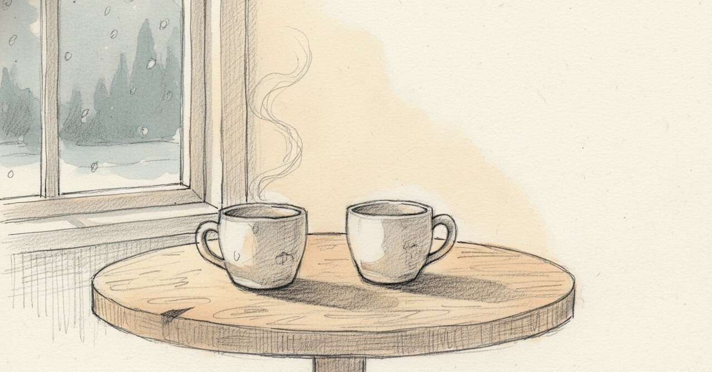

「一緒にいて心地よい」と書いた1月の夜から、「焦りがない安心」に至る1年

2025年1月8日、23時59分、ノートに「もっと一緒にいたいなって思う」と書いた。
今日の現場
2026年1月、最近会う人との関係を、ノートに繰り返し整理している。
「壊さないために、ちゃんと考えている記録」
「焦ってない。逃げてもない。そして今の流れは、かなり良い」
LINEの頻度は多くない。会ってるのはまだ3回だ。それでも徐々に関係が温かくなっていて、相手の言葉の使い方も、ちょっと甘えた感じが増えてきている。悪くないかな、と思う。
別の日には、こうも書いた。
「以前の恋愛の仕方だと手を握ったりしようとしていたかも。でも、昨日は自然とそんなことしたいとも思わなかった。焦りがないというか安心していたような。ただただ彼女の楽しんでいる様子をみるのが嬉しかった」
「穏やかだなぁ」とも書いた。
あの頃と今
ちょうど1年と2日前のノートに戻る。
「23時59分。前回の日記から数日空いてしまった。昨夜はあの頃のご飯仲間とご飯行って帰りが3時とかになってしまったもんな」
「やっぱ一生懸命伝えようとしてくるところかわいいな。価値観も離れていないし、一緒にいて心地よい気がする。もっと一緒にいたいなって思う」「彼女の笑顔見たくなる」
その夜の私は、「もっと一緒にいたい」と書いた。心地よいという感情がそのまま、もっとという欲求に直結していた。23時59分、ご飯から帰って3時になる、という具体は、その熱の表れだった。
頭の中
1年前の私は「もっと」と書いた。今の私は「壊さないために」と書いた。
両方ともその人を大切にしたい気持ちだ。たぶん根っこは同じ。違うのは、大切にする方法が「一緒にいる量」から「壊さないために考える時間」に変わったこと。
別の見方もある。「焦らない」「壊さない」と書きすぎると、それはそれで距離を冷たくするんじゃないか。手を握ろうと思わなかった日の自分が、本当に安心していたのか、ただ慎重になっていただけなのか、まだわからない。
それでも、ご飯から3時に帰った夜の私と、3回会ったことに穏やかさを感じる今の私は、たぶんどちらも同じ「大切にしたい」を書いている。
まだ途中のこと
「焦らないことが安心」と気づいた1月と、「もっと一緒にいたい」と書いた1月は、どちらも私だ。どちらも合っている。
次に会える日がいつかは、まだ決まっていない。決まっていないことが、たぶん少し前の私には不安だっただろう。今はそうでもない。
こうした記録を続けています。よければ、また読みに来てください。
#日記 #ジャーナリング #人間関係 #整える #AkariLab